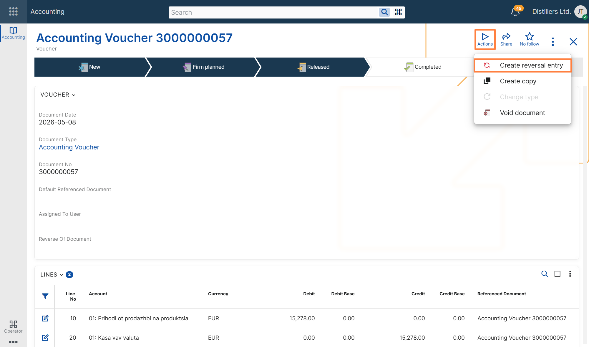
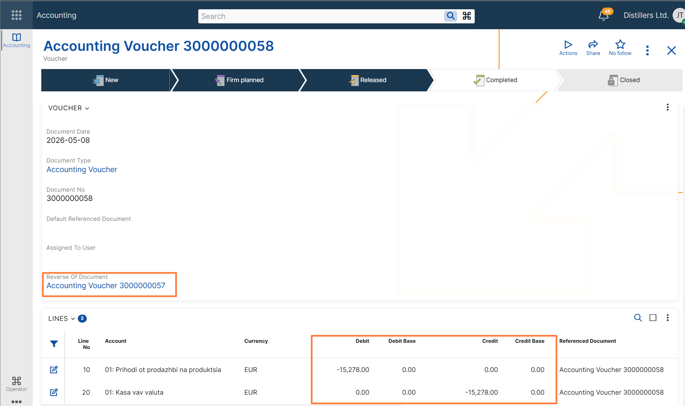

Create reversal entry
Overview
The Create reversal entry UI function is available for Accounting Vouchers in both the Web Client and the Desktop Client.
It is used to create a new accounting voucher that reverses the accounting effect of an existing voucher. The system creates the new voucher by copying the original voucher and its lines, then reversing the sign of the accounting amounts.
The new voucher is linked to the original one through the Reverse Of Document field. This provides clear traceability between the original voucher and the reversal entry.
The function is intended for controlled reversal of already completed accounting vouchers.
Getting started
To use the function:
- Open an accounting voucher in Completed or a higher state.
- Run Create reversal entry:
- in the Web Client, from the Actions drop-down menu;
- in the Desktop Client, from the Functions tab.
- Confirm the operation.

After confirmation, the system creates a new accounting voucher as a reversal entry of the current one.
After successful execution:
- in the Web Client, the system shows a success message and provides a link to the newly created voucher;
- in the Desktop Client, the created voucher is opened.
The new voucher:
- is linked to the original voucher through Reverse Of Document;
- contains copied voucher lines with reversed accounting amounts;
- is created as a separate voucher, so the reversal remains traceable.

Concepts
What the function does
The function creates a new accounting voucher based on the current one and reverses the sign of the accounting amounts in the copied lines.
This allows users to create a reversal posting without entering the reversing lines manually.
The original voucher remains available, while the new one records the compensating accounting effect.
Availability conditions
The function can be executed only when the current accounting voucher is in Completed or higher state.
If the voucher is in any other state, the function cannot be executed.
Reversal relationship
When the reversal entry is created, the system sets the Reverse Of Document field in the new voucher to the original voucher.
This creates an explicit relationship between the two documents and makes it easy to identify which voucher reverses which original entry.
Reversed amounts
The new voucher copies the lines from the original voucher and reverses the sign of the accounting amounts.
This applies to the debit and credit amounts and to their related calculated accounting amount fields, such as base and reporting amounts where applicable.
As a result, the reversal entry compensates the accounting effect of the original voucher.
Copy behavior
The reversal voucher is created in the same general way as a copy of the current voucher, while preserving the accounting context of the original document.
The copied data includes the voucher lines and the relevant document references needed for traceability.
At the same time, the new voucher is created as a new document, with its own lifecycle and creation metadata.
Consistency rules
To preserve accounting consistency, the function applies the following rules:
- only one reversal entry can be created for a given voucher;
- a voucher that is already a reversal entry cannot be reversed again.
These restrictions prevent ambiguous reversal chains and help maintain a clear one-to-one relationship between the original voucher and its reversal entry.
Troubleshooting
The function is not available
Possible cause
The current voucher is not in Completed state.
Resolution
Make sure the voucher is completed before attempting to run Create reversal entry.
The function cannot be executed because a reversal entry already exists
Possible cause
A reversal entry has already been created for the current voucher.
Resolution
Only one reversal entry is allowed per voucher. Open the existing reversal voucher instead of creating another one.
The current voucher cannot be reversed because it is itself a reversal entry
Possible cause
The current voucher already has a value in Reverse Of Document and is therefore a reversal of another voucher.
Resolution
A reversal entry cannot be reversed again by this function.